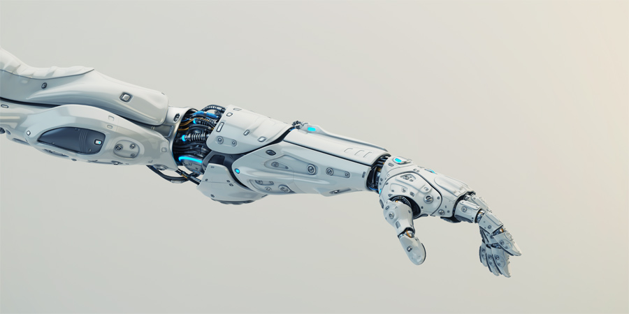

Robotics is an interdisciplinary field that integrates engineering, computer science, and technology to design, create, and operate robots.
These machines can perform tasks autonomously or semi-autonomously, with applications ranging from manufacturing and medical surgery to space exploration and household cleaning.
Robotics encompasses areas such as mechanical engineering, which deals with the physical construction and control of robots, electrical engineering, which focuses on the sensors and circuitry, and computer science, which provides the programming and algorithms for intelligent behavior.
With advancements in AI and machine learning, robots are becoming increasingly capable, enhancing their ability to navigate complex environments, learn from experiences, and interact with humans. This field continually evolves, driving innovation and transforming industries worldwide.
Ex.1 - Robots constructing a vehicle

As the world relies more and more on robots to do manual labor we need to ensure we have the proper training to maintain these mighty machines.